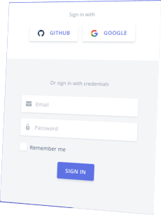

¡Es hora de pegar el salto!
1º Convocatoria 2018 Finalizada el 23/11/2018
Somos la aceleradora de startups tecnológicas de Telecom Argentina. Buscamos proyectos liderados por emprendedores innovadores y creativos para desarrollar nuevos negocios, rentables y escalables.
Dado el cierre de la convocatoria, te invitamos a dejarnos tus datos para futuras inscripciones.
En Telecom, creamos Garage Personal para potenciar nuevas startups tecnológicas que ayuden a nuestros clientes a hacer frente a los desafíos que atraviesan con innovación, creatividad y pasión.
Trabajamos en alianza con Incutex, una empresa con más de 5 años de experiencia en el mercado, formando equipos de trabajo para brindarle a los emprendedores todas las herramientas necesarias para desarrollar sus startups y convertirlas en negocios sustentables.
Buscamos proyectos que puedan sumarse a nuestra oferta de productos y servicios con un impacto positivo en la industria en la que se desarrollen y en la experiencia del cliente.
¡Llevá tu startup al próximo nivel junto a nosotros!
Cada startup seleccionada recibirá un incentivo económico y el acompañamiento de especialistas que les brindarán herramientas y oportunidades para transformar su idea en un negocio exitoso.
Las startups contarán con un incentivo de hasta 875 mil pesos sin compromiso de equity.
Se beneficiarán de la escala que puede proporcionar la compañía de telecomunicaciones más grande de Argentina y la red de negocios que agregan valor a millones de clientes y a miles de empresas todos los días. Tendrán contacto con empresarios e inversores que los ayudarán a potenciar el negocio de su startup.
Los emprendedores trabajarán bajo una metodología exitosa para el diseño, la validación y el desarrollo de su modelo de negocio. También contarán con asesorías a la medida de cada startup, en el plano el tecnológico, comercial y financiero.
Sabemos que hoy en día los clientes buscan soluciones tecnológicas que sean simples, innovadoras y únicas. Buscamos startups enfocadas en los siguientes territorios:
Buscamos soluciones a través de dispositivos interconectados, y/o softwares que optimicen el mundo de las Empresas.
Ejemplos: Alertas y Automatizaciones/ Procesos de stock, retail, e-commerce, complementando herramientas de Big Data y Analytics.
Buscamos startups que desarrollen nuevas experiencias a la hora de entretener, informar, educar y ayudar a los usuarios.
Ejemplos: AR/VR/Social Gaming/ Mobile Games/ Travel&Culture.
Buscamos emprendedores que aporten nuevas ideas y soluciones para el mercado financiero digital.
Ejemplos: Scoring/ Medios de pago/ Blockchain/ Business Management/
Remittance.
En la primera etapa los emprendedores deberán registrarse y completar el formulario en YouNoodle para postular su proyecto. Hay tiempo para presentarlo hasta el 08/11/2018. El proceso de selección puede durar entre 30 y 45 días, luego de la fecha de cierre de la convocatoria. Es muy importante que la startup tenga una base en tecnología, que esté en crecimiento y que alguno de los emprendedores pueda comprometerse full time con el proyecto.
Vamos a seleccionar los mejores proyectos para entrevistarnos con sus fundadores de manera online. Para esta instancia se le pedirá a los emprendedores que realicen una presentación sobre el emprendimiento.
Las startup que lleguen a esta instancia serán contactadas para coordinar una reunión presencial donde analizaremos el negocio en profundidad junto a todo el equipo de Incutex.
Finalmente seleccionaremos hasta 5 proyectos para que formen parte de Garage Personal. Trabajaremos en equipo para que los emprendedores presenten una “demo” del negocio ante posibles clientes e inversores.
Garage Personal es un programa de colaboración y aceleración de startups innovadoras.
El objetivo del programa es colaborar con los participantes seleccionados a fin de desarrollar y acelerar el proyecto presentado, con la ayuda de mentores, metodologías y herramientas que buscan facilitar el camino del emprendedor, según los términos y condiciones propios del programa.
El programa es organizado y patrocinado por Telecom Argentina y ejecutado mediante una alianza estratégica con la Aceleradora Incutex SRL.
Una startup es un equipo de personas que busca crear un modelo de negocio rentable, hay startups más maduras que otras, en base al nivel avance del proyecto.
Cuando hablamos de nivel de avance, hablamos de las validaciones que una startup realiza con el objetivo de encontrar dicho modelo de negocio y los desarrollos que hayan realizado como producto y/o servicio de valor para un cliente determinado.
La convocatoria abierta es la principal vía de captación de proyectos que tiene el programa y consiste en que cada startup presente su proyecto de forma online completando el formulario que ponemos a disposición para tal fin.
Podrán participar en el proceso de selección de ingreso al programa toda persona humana o jurídica, nacional o residente en la República Argentina que, de conformidad con la legislación aplicable, tenga capacidad legal para obligarse. Se admitirá asimismo la participación de personas humanas extranjeras, quienes deberán acreditar contar con los permisos necesarios y cumplir con los requisitos legales para residir en la República Argentina durante el desarrollo del programa, tales como: presentación de documento válido y vigente, constancia de ingreso al país, tramitación de ingreso que detalle el motivo y tipo de residencia otorgada, etc. Ni el Administrador ni el Patrocinador asumirán ningún costo de viaje, traslados, ni de regularización de la residencia por parte de los participantes.
No podrán participar del programa los empleados, administradores y/o socios del Administrador (Incutex SRL) ni del Patrocinador (Telecom Argentina) del programa, ni personas que participen como mentores del programa o de alguna manera se encuentren involucradas en el diseño, entrega o promoción del programa, ni familiares directos de las mismas.
Se entiende por “mentores” del programa a los referentes puestos a disposición por el Administrador para guiar a los participantes del programa durante el desarrollo de sus proyectos.
No podrán participar del programa las personas jurídicas que tengan un vínculo contractual actualmente con el Patrocinador y/o el Administrador y/o sus empresas afiliadas, vinculadas o en las que el Patrocinador y/o el Administrador tengan participación, así como tampoco sus respectivos familiares en línea directa, hasta el segundo grado de consanguinidad inclusive. Tampoco podrán participar del programa cualquier organismo vinculado directa o indirectamente al Estado Nacional y/o Provincial y/o Municipal.
No hay límite máximo de edad, solamente debes ser mayor de 18 años para poder participar.
Se admitirá la participación tanto en forma individual como por equipos. Los equipos deberán seleccionar, de entre sus miembros, a un único autorizado que actuará como líder y representante del proyecto. El líder del proyecto deberá contar con autorización de los restantes miembros del equipo para presentar la solicitud de ingreso al proceso de selección al programa y será personalmente responsable de asegurarse que todos los miembros de su equipo conozcan, acepten y cumplan con estos Términos y Condiciones.
Recomendamos: construir equipos complementarios con 2 integrantes o más, con probada experiencia en el tema del proyecto presentado. Al menos 1 de los emprendedores debe estar abocado al proyecto full-time.
Específicamente no seleccionamos startups que se encuentren en etapa de idea y/o estén enfocadas en desarrollar su negocio en los siguientes territorios: restaurants, industria textil/ indumentaria, industria alimenticia, consultoras, empresas de desarrollo de software y otras empresas orientadas a servicios
Elegimos fundadores que tienen startups con productos que resuelven problemas reales y han sido validados. Buscamos que los proyectos seleccionados agreguen valor a Telecom y sus unidades de negocio, ya sea ofreciendo la solución, producto y/o servicio en nuestros canales comerciales y/o implementandolo internamente, con el objetivo de ser más eficientes y brindar una mejor experiencia a nuestros clientes.
Si, podrás ser seleccionado, pero sugerimos conformar equipos balanceados, complementarios y de dos fundadores o más. La experiencia nos demuestra que a medida que la startup crece, se vuelve cada vez más y más complicado para una sola persona abarcar todas las necesidades de su startup con días que solo tienen 24 hs.
Te aconsejamos con énfasis que busques co-fundadores que complementen tus habilidades. Por ejemplo, si sos un gran desarrollador de software, tal vez deberías considerar buscar alguien con habilidades en negocios. Si tenés grandes habilidades en negocios y ningún co-fundador es desarrollador, es muy poco probable que los seleccionemos, buscá un desarrollador que se una a tu equipo.
Se admitirá la presentación de múltiples solicitudes (por ejemplo, como participante individual y como parte de un equipo), siempre y cuando las solicitudes sean sustancialmente diferentes entre sí, a exclusivo criterio de Telecom Argentina e Incutex SRL.
Si se interpretara que dos o más solicitudes presentadas por una misma persona tienen objetos idénticos o similar se podrá solicitar al participante que elija una de las solicitudes y elimine las restantes para continuar únicamente con esa solicitud en el proceso de selección del programa.
Si, la plataforma que recibe los proyectos de las startups llamada YouNoodle está preparada para que los datos ingresados dentro del formulario queden guardados para que los puedas seguir trabajando más tarde. Recordá completar todo el formulario antes de la fecha de vencimiento de la convocatoria.
No. Todas las Solicitudes deberán presentarse a través de la plataforma YouNoodle (https://ww2.younoodle.com)
Los participantes deberán presentar su solicitud completando el formulario con preguntas y respuestas on line disponible en la plataforma YouNoodle. No se permiten presentaciones en papel.No se permiten presentaciones enviadas vía mail.
Sí. Los participantes deberán registrarse en la plataforma YouNoodle y aceptar los Términos de Servicio de YouNoodle publicados en https://ww2.younoodle.com/terms/ (en adelante los Términos de Servicio de YouNoodle) y la Política de Privacidad de YouNoodle publicada en https://ww2.younoodle.com/privacy/ (en adelante la Política de Privacidad de YouNoodle).
Vamos a hacer nuestro mayor esfuerzo para contactarnos con las startups pre-seleccionadas en un periodo no mayor a 1 mes posterior de finalizada la convocatoria.
Aproximadamente, el proceso de selección durará entre 30 y 45 días, luego de la fecha de cierre de la convocatoria.
Seleccionamos hasta 5 startups por año porque nos permite trabajar más intensamente en la formación de los emprendedores, la consolidación de los equipos, el desarrollo estratégico y el éxito de cada startup.
El programa brinda un acompañamiento financiero inicial de $875.000 (ochocientos setenta y cinco mil pesos argentinos) sin tomar equity: Equity Free Money (no tomamos acciones de tu empresa/proyecto por ser seleccionado en el programa).
Al finalizar el programa tanto Telecom como Incutex y otros inversores podrán realizar una oferta de inversión, comercialización y/o utilización de lo desarrollado en el proyecto.
El incentivo se entrega como Premio No Azaroso.
Para recibir el premio el participante deberá aceptar los términos y condiciones del mismo al momento de aplicar al programa. Dichos términos y condiciones aseguran que el dinero del acompañamiento financiero deberá ser invertido en el proyecto presentado.
El premio deberá invertirse en capital que tengan vinculación directa y alta incidencia en el Plan de Negocios del proyecto presentado. Dichas condiciones se encuentran consignadas en los Términos y Condiciones del programa. Para más info entrá a: Garage Personal.
Una vez seleccionados las startups, brindaremos el financiamiento para que la startup crezca, sin embargo, para continuar creciendo algunas startups necesitan levantar rondas de inversión. Cuando esto suceda, por una parte, conectaremos a los emprendedores con inversores para que analicen sus startups y escuchen sus pitch.
Por otro lado, existe la posibilidad de que Incutex y Telecom realicen un follow-on de hasta USD$100.000 a cambio de participación accionaria. Esto se analizará en base a los resultados anuales y las necesidades financieras de la startup al momento de la inversión.
Al finalizar el programa tanto Telecom como Incutex y otros inversores podrán realizar una oferta de inversión, comercialización y/o utilización de los desarrollado en el proyecto.
Incutex, nuestro partner en la Producción de Garage Personal, cuenta con un edificio de más de 500 mts2 con espacio de coworking y eventos en Córdoba Capital. Todas las semanas realizaremos actividades para mantener a nuestros emprendedores motivados. Ellos pueden hacer uso del espacio para el beneficio de su startup, ya sea organizando eventos, reuniones, etc.
La fecha límite para aplicar al programa de Garage Personal es el día 08/11/2018. El equipo de Garage se reserva la posibilidad de efectuar cambios en la fecha de cierre.
Las solicitudes de ingreso que se reciban con posterioridad a ese plazo de admisión no podrán participar del programa. No obstante ello, el Administrador y el Patrocinador se reservan el derecho de suspender, ampliar y/o modificar, en cualquier momento y a su solo criterio, el plazo para la presentación de solicitudes.
El programa consta de una serie de entrenamientos para los equipos emprendedores para que puedan trabajar mejor, validar sus modelos de negocios y crecer de forma organizada. Los entrenamientos están organizados de la siguiente forma:
Una vez que un equipo emprendedor comience el programa semanal de reuniones y de actividades, el equipo ejecutivo y el comité directivo los acompañarán y les brindarán apoyo en lo que necesiten.
Hemos diseñado programas que se aplican a diferentes emprendimientos, y se los designará para que los sigan en cada parte del proceso. Contarán con tableros de control para llevar los indicadores.
Involucra seguimiento sobre la administración, finanzas y contabilidad de las startups.
En lo financiero, se deberá contar con los flujos de fondos desde el primer mes que el emprendimiento haya generado ingresos.
Se trabajará de manera enfocada en dos puntos clave:
En lo administrativo, se considerarán todos los trámites a realizar para que el emprendimiento pueda operar con normalidad.
Se trabajará con los equipos desde la validación del encaje entre problema/solución, y en la búsqueda de un modelo de negocios que sea repetible y escalable. Se preparará a los equipos para posibles ventas tempranas identificando a sus usuarios y optimizando la adquisición de clientes.
Se buscará simplificar el desarrollo del Producto Mínimo Viable, en procesos iterativos, a partir de las validaciones con los clientes, y llegar éstos desde etapas tempranas.
Los emprendedores trabajarán con mucho foco en el desarrollo del mercado, para conocer a sus clientes en profundidad. Trabajaremos con los emprendedores en las estrategias y herramientas para la adquisición, retención y crecimiento de clientes. Se desarrollará la hoja de rutas de ventas, y de las estrategias de precios.
El programa de Garage busca facilitar el proceso de desarrollo al máximo, ofreciendo mentorías en tecnología y servicios gratuitos que permitan las startups avanzar en el crecimiento de su proyecto.
Durante los meses de programa, se identificarán indicadores clave en cada uno de los emprendimientos y se trabajará con los emprendedores para que monitoreen métricas y elaboren planes de trabajo, establezcan objetivos anuales y mensuales y desarrollen un tablero de control.
El tablero de control es una guía que se utilizará en las reuniones una vez que los emprendimientos completan el primer año del programa. Las reuniones a partir del segundo año se enfocarán en el seguimiento de las métricas clave de cada emprendimiento con seguimiento semanal o bisemanal.
Existen diferentes modelos de participación y trabajo con mentores e inversores.
Cada año se organiza un evento con mentores y con los nuevos emprendedores, conocido como Demo Day, donde los mentores tienen la posibilidad de conocer todos los nuevos proyectos, y poder generar afinidad o interés por alguno en particular. Se proporciona a ambas partes la información de contacto para facilitar que entre ellos se forme una relación. Los emprendedores al conocer al grupo de mentores, podrán comenzar a contactarlos proactivamente por diferentes cuestiones.
Los mentores dedicarán una cantidad fija de horas mensuales que los emprendedores podrán reservar para llegar a ellos pidiendo ayuda y recursos. Desde la Company Builder, se aseguran 2 mentorías focalizadas por mes, de una hora para cada proyecto, y luego cada emprendedor decidirá si tomarla o no, dependiendo de sus necesidades específicas. Luego se les brindará de un canal de feedback a ambas partes para mejorar el espacio. Durante esa hora el trabajo entre el emprendedor y el mentor es libre, generando un espacio abierto y dinámico de trabajo.
Cada ex emprendedor cuenta con su experiencia, y expertise en diferentes temáticas, es por eso que cuando se detecta que la experiencia previa de un emprendedor puede potenciar a otro emprendedor, se generarán espacios de mentorías entre ellos, promoviendo el vínculo y el trabajo colaborativo. De la misma manera, una vez al mes, se realizará un encuentro de CEOs de todas las startups, para trabajar temáticas en común, y desarrollar sinergias.
Un mentor seleccionará un proyecto y decidirá seguir un plan extendido durante algún tiempo, ayudando al emprendedor con algunas habilidades o temas sobre el negocio (por ejemplo, Ventas, Inteligencia Emocional, etc), así también como el desarrollo de alianzas estratégicas o canales comerciales, acompañando al emprendedor en diferentes instancias de manera personalizada.
El principal objetivo es que el emprendimiento crezca y avance, es por eso que el programa se adapta al estadío y a las necesidades del proyecto. No vamos a hacerles tomar capacitaciones o pasar por entrenamientos innecesarios. Todas las actividades que realizamos son para agregar valor, desarrollar a los emprendedores de manera profesional y hacer crecer el negocio.
Si, dejamos la siguiente dirección para que nos contactes: infogaragepersonal@teco.com.ar
Al postularte aceptás los términos y condiciones que los podés ver aquí.